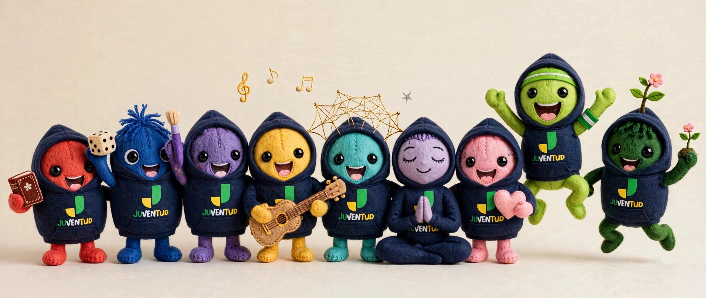

Ju-bits Kids
Tutores con inteligencia artificial para niños de primaria, basados en las inteligencias múltiples.
👋 Para mamá, papá o tutor: empieza aquí
Ju-bits Kids es un grupo de nueve tutores de fieltro con los que tu hijo o hija puede platicar, preguntar y estudiar. Cada uno fortalece una inteligencia distinta, según la teoría de las inteligencias múltiples de Howard Gardner: las palabras, los números, el arte, la música, el cuerpo, la amistad, las emociones, la naturaleza… y Coni, que piensa en red y conecta todas las demás.
Esta pantalla es para ti, adulto. La configuración la haces tú una sola vez; después, tu hijo elige tutor y a aprender.
🔑 Cómo funciona (configuración única)
- Los tutores usan inteligencia artificial de Groq o de Gemini (Google). Necesitas una clave gratuita de uno de los dos servicios: es una cuenta tuya, sin costo, que se consigue en dos minutos.
- En la siguiente pantalla eliges el servicio y pegas tu clave. La app la prueba al momento y la guarda solo en este dispositivo: no se envía a ningún servidor nuestro ni se comparte.
- Después creas el perfil de tu hijo: su nombre o apodo, su edad, su grado y qué le gusta. Con eso los tutores adaptan su lenguaje y sus ejemplos.
- ¡Listo! Tu hijo elige un tutor y empieza a platicar, por texto o con la voz.
🛡️ Seguridad para menores
- Filtros en tres capas: los tutores tienen reglas estrictas de contenido infantil; la app revisa lo que escribe tu hijo antes de enviarlo y revisa lo que responde la IA antes de mostrarlo. Los temas de adultos quedan bloqueados.
- Sin datos personales: los tutores nunca piden nombre completo, dirección, escuela, teléfono ni fotos, y la app detecta si tu hijo intenta compartir un número de teléfono.
- Si algo preocupa: si tu hijo cuenta que alguien le hace daño o que algo le preocupa, el tutor le dirá con cariño que lo platique con un adulto de confianza.
- Zona de padres con candado: cambiar la clave o el perfil pide resolver una operación sencilla, para que un niño no lo cambie por accidente.
- Ningún filtro es perfecto: acompaña a tu hijo en sus primeras sesiones y platiquen sobre lo que aprende.
🔑 Paso 1 · Tu clave de inteligencia artificial
Elige el servicio y pega tu clave gratuita. Solo se guarda en este dispositivo.
🧒 Paso 2 · El perfil de tu hijo o hija
Con estos datos los tutores adaptan su lenguaje y sus ejemplos. Se guardan solo en este dispositivo.
Cada tutor fortalece una inteligencia. ¡Puedes cambiar de tutor cuando quieras y probar con todos!
🔒 Zona de padres
Desde aquí controlas la app de tu hijo.
Recuerda: los filtros protegen, pero tu acompañamiento es la mejor protección. Revisa de vez en cuando con tu hijo lo que platica con los tutores y celebren juntos lo que aprende. 💛
Ju-bits Kids · Tutores para primaria con inteligencias múltiples
«Hacer siempre y en todo lo mejor»